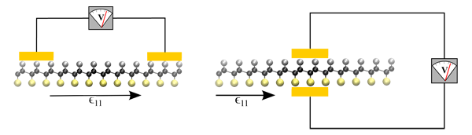

In previous work, we have shown that electromechanical coupling can be introduced into graphene through the selective surface adsorption of atoms. The anomalous property we found, known as piezoelectricity, is routinely used to achieve robust and precise results in a variety of macro- and mesoscale sensors and actuators. In this work, we delve further into the realm of piezoelectric graphene derivatives by showing that chemically modifying graphene by adsorbing hydrogen atoms on one side and adsorbing fluorine atoms on the other side can induce a strong piezoelectric coupling effect.

In-plane and out-of-plane piezoelectric responses in graphene chemically modified with H and F.
Because experimentally adsorbing atoms on graphene can result in a myriad of adatom configurations on its surface, we perform an exhaustive search of candidate configurations of hydrogen and fluorine atoms adsorbed on graphene’s surface. By using density functional theory to model the physical-chemical aspects of these structures, we discover for the first time that both an in-plane and out-of-plane piezoelectric effect can be engineered into nonpiezoelectric graphene in this fashion. In the lowest energy configuration, we find this effect is comparable to known bulk piezoelectric materials, which makes a very compelling case for this doped graphene as an engineering material in the next generation of nanoscale devices.
Tutorial:
Emergent Electromechanical Properties of Nanoscale Materials, Evan Reed, Computational Chemistry and Materials Science program (Lawrence Livermore National Laboratory).
Publication:
Ong, M. T., Duerloo, K.-A. N., Reed, E. J., The Effect of Hydrogen and Fluorine Coadsorption on the Piezoelectric Properties of Graphene. Journal of Physical Chemistry C, doi:10.1021/jp3112759 (2013).